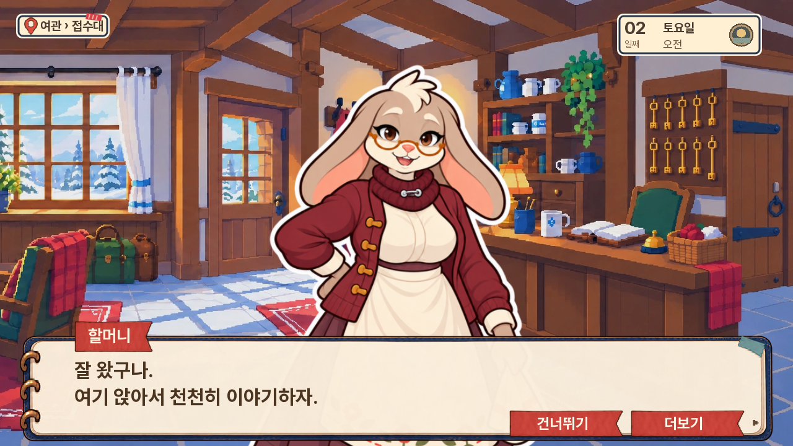
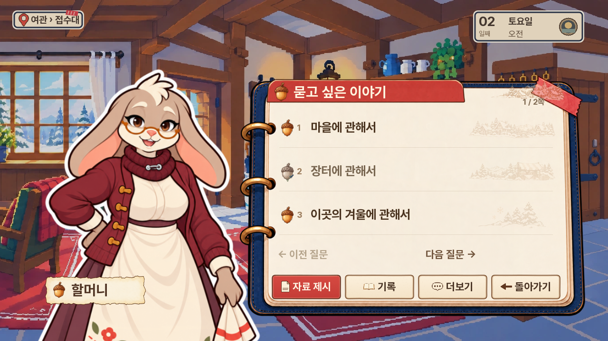
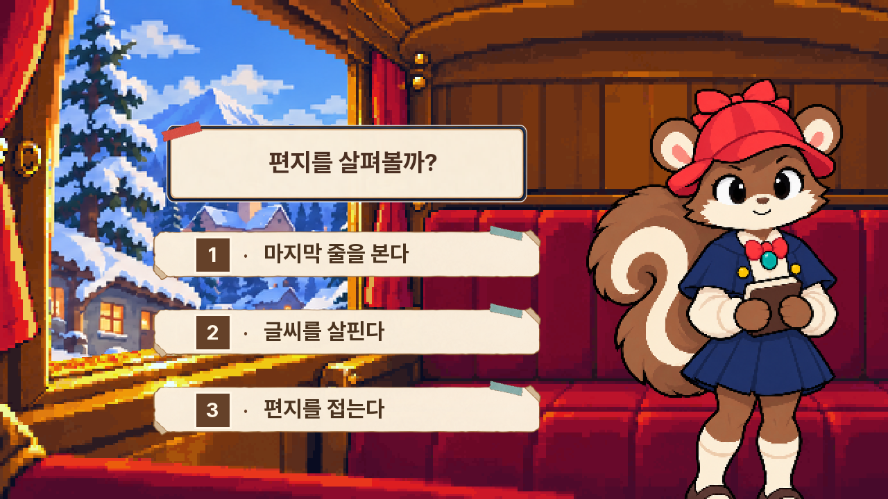

<meta charset="utf-8"><style>body{margin:0;background:#eee8dc;color:#29364b;font-family:sans-serif}main{display:grid;grid-template-columns:1fr 1fr;gap:8px;padding:8px}article{background:white}h3{font-size:20px;margin:0;padding:10px 14px}img{display:block;width:100%}a{color:inherit;text-decoration:none}header{font-size:24px;font-weight:bold;padding:16px}</style><header>다람탐정 0.20.40 · 실제 UI 검토</header><main><article><h3>대사</h3><a href="04-dialogue.png"></a></article><article><h3>질문 · 검토용 항목</h3><a href="05-questions.png"></a></article><article><h3>선택 · 검토용 항목</h3><a href="06-choice.png"></a></article><article><h3>메인</h3><a href="01-main.png"></a></article></main>